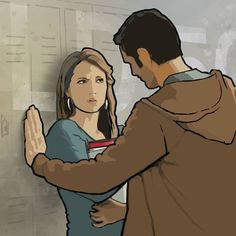
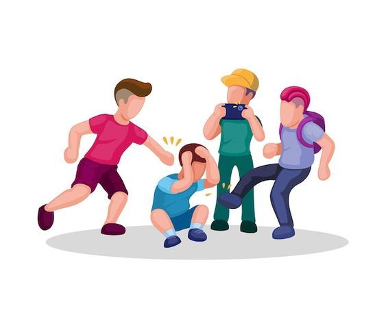
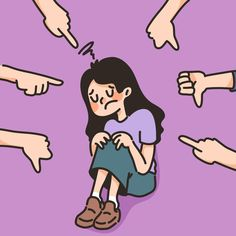
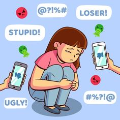
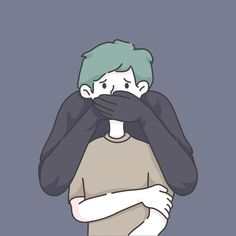
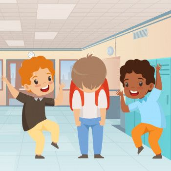
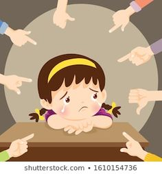
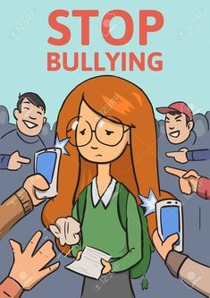

CARACTERISTICAS DEL ACOSO ESCOLAR
El acoso escolar es un tipo de violencia que se caracteriza, principalmente,
por ser ejercido por adolescentes durante la etapa escolar en contra de otros
compañeros de clase.
A continuación se presenta una serie de características determinadas por los especialistas.

Existe un predominio de
poder del acosador
sobre la víctima.

La víctima desarrolla un miedo continuo ante la presencia
o encuentro con su agresor.

Las agresiones son constantes, pueden durar meses o años,
y se pueden llevar a cabo de manera individual o grupal.

Tras las constantes amenazas y ataques, la víctima desarrolla miedo
y desconfianza en sí mismo.

Las conductas violentas incluyen agresiones verbales, físicas y
psicológicas.

Las víctimas disminuyen su rendimiento académico.

Los testigos de las acciones violentas no participan y
observan de manera insensible lo que sucede.

Las víctimas no quieren asistir a clases, no les cuentan
a sus representantes nada acerca de lo que les sucede y
cambian de humor drásticamente.
REGRESAR